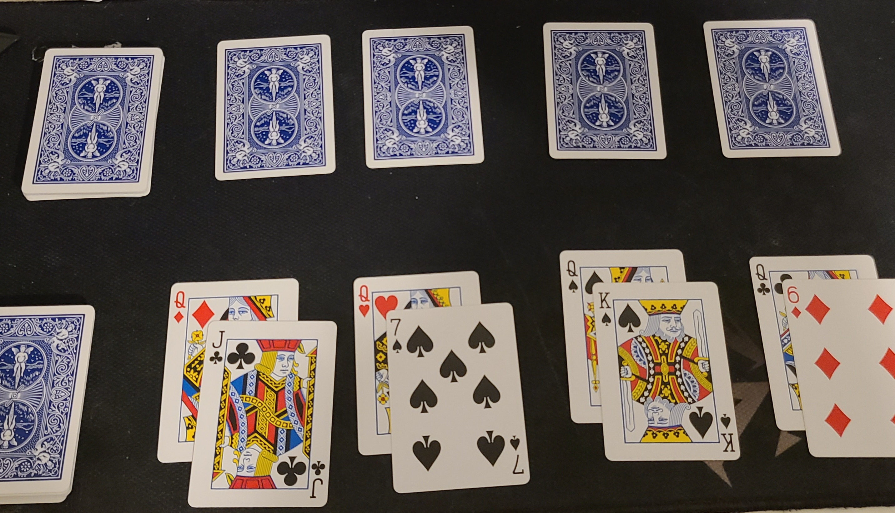
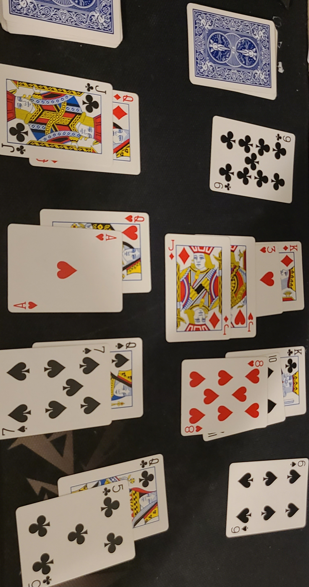
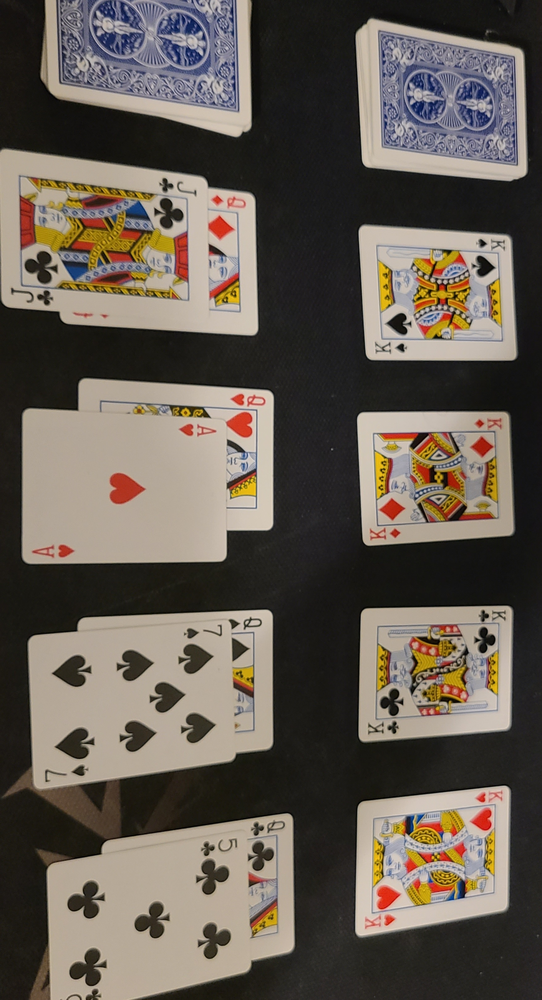

Queen's Bandit is a cooperative dungeon crawler-resource managment card game. You and another of 1 or 3 people play as queens, fighting through countless enemy cards until the pooled enemy health is exhausted. The game uses a basic 52 deck of cards and an optional pen and paper to keep track of current values such as: pooled player health, pooled player currency, and more.

This game was my attempt at using system theory elements such as stocks, flows, parts, reinforcing loops, and balancing loops.
